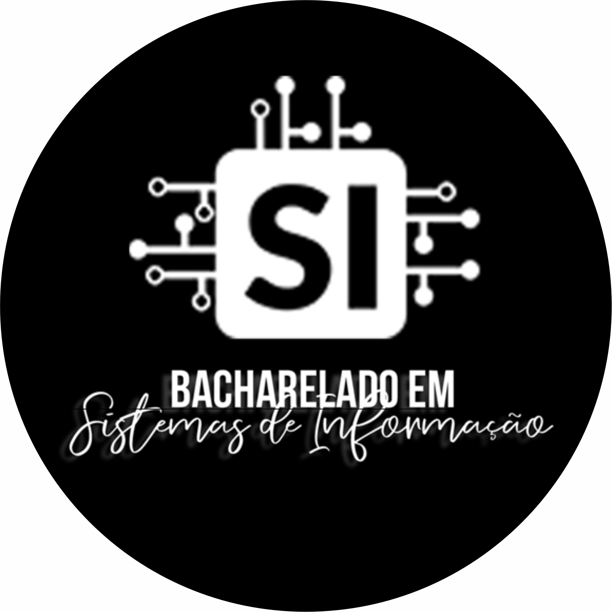

José Douglas
I play basketball, program(code), posts videos, read books and listen podcasts.
Formação Acadêmica
- Cursando - Bacharel em Sistemas de Informação - IFAL Instituto Federal de Alagoas (7º Período)
- Atualmente estou me dedicando a aprender diversas ferramentas como Docker-Compose, Kubernetes, Jenkins, Sonarqube, Prometheus, Helm, Grafana com aplicabilidade em plataformas Cloud como AWS (Amazon Web Services), para entrar de vez no mercado de DevOps.
- Me dedico a programar em Python com o Framework Flask, (criando API’s - projeto pessoal, desenvolvi o back-end GET, PUT, PATCH e DELETE e estou desenvolvendo a parte do front-end que é do cliente), aos poucos vou aprendendo a desenvolver app’s do Framework Django para adquirir bagagem e poder ajudar o time de desenvolvedores.
- Conhecimentos em Algoritmo e Lógica de programação, estrutura de dados, montagens de computador, redes de computadores, em sistemas e servidores (Windows e Linux), HTML, CSS, PHP, Javascript, SQL, Python, Java, Git, Github, Docker, Vagrant, Terraform e Ansible.
- Telefone: (82) 998 121 757 / (19) 999 223 655
- Habilitação: CNH:AB
- Bairro: Cidade Universitária
- Cidade: Maceió - Alagoas
- Manserv Logística - Auxiliar de Logística (9 meses em SP)
- Atacadão S.A. - Assistente de Informática (2 anos e 8 meses)
- Mix cópia Gráfica Rápida Shopping Pátio - Arte Finalista (3 anos e 10 meses)
Estudos Atuais e Conhecimentos
Dados pessoais
Experiências Profissionais